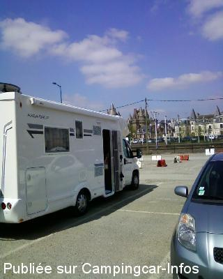
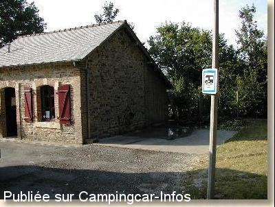

AC = Camping acceptant les camping-cars de :
VITRÉ
(N° 250)
Accès/adresse :
Allée de Saint-Etienne
Camping municipal Saint Etienne ***
35500 VITRÉ
Camping municipal Saint Etienne ***
35500 VITRÉ
Latitude : (Nord) 48.10932° Décimaux ou 48° 6′ 33′′
Longitude : (Ouest) -1.19782° Décimaux ou -1° 11′ 52′′
Tarif : 2015
Emplacement : 3,10 €
Personne + 7 ans : 3,10 €
Enfant - 7 ans : 1,55 €
Électricité : 2,60 à 3,60 €
Wifi : 1,55 €
Lave-linge ou sèche-linge : 3,10 €
Type de borne : Artisanale
Services :


Accès handicapés
Jeux enfants
Autres informations :
Ouvert du 01/03 au 15/12
45 emplacements
Tél : +33(0)299 752 528
info@camping-vitre.fr
http://www.mairie-vitre.com/Camping.html

Le 05/01/2014 par boonalu

Le 12/03/2003 par Pierre CHAPOT
de
jacquest
le 15/06/2015 :
Mardi 2/6/2015: tres bon acceuil. Sanitaire super. Centre Vitré à faire à vélo. CC+2 personnes=10,85€.
Mardi 2/6/2015: tres bon acceuil. Sanitaire super. Centre Vitré à faire à vélo. CC+2 personnes=10,85€.
de
yves
le 14/09/2014 :
trés bon accueil au camping, aprés aprés avoir vidangé et fait le plein d'eau,avons passé une nuit sans problèmes sur le haut du parking jouxtant la salle des sports.Nombreux chemins pédestres aux alentours.trés jolie ville à visiter en traversant un magnifique parc .Merci à cette belle petite ville.
trés bon accueil au camping, aprés aprés avoir vidangé et fait le plein d'eau,avons passé une nuit sans problèmes sur le haut du parking jouxtant la salle des sports.Nombreux chemins pédestres aux alentours.trés jolie ville à visiter en traversant un magnifique parc .Merci à cette belle petite ville.
de
camilleb61
le 19/11/2008 :
Sommes passés fin novembre - camping +/- 2 km de la ville - GPS fatigué par trouvé le camping ;-))) - Office du tourisme autorise les CC pour une nuit sur les parkings de la ville. Bien
Sommes passés fin novembre - camping +/- 2 km de la ville - GPS fatigué par trouvé le camping ;-))) - Office du tourisme autorise les CC pour une nuit sur les parkings de la ville. Bien
de
PHILIPPE
le 14/11/2006 :
Passer la nuit sur le camping, nombreuses place séparées par des haies, edf a chaque emplacement,tres tranquille mais un peu cher.
Si vous tomber en panne a vitré appelez le Garage FIAT ils sont très sympa et pas cher, obliger de passer la nuit dans le camping car en attente de pièce sur le parking de leur garage, ils nous ont brancher l'electricité.Super
Passer la nuit sur le camping, nombreuses place séparées par des haies, edf a chaque emplacement,tres tranquille mais un peu cher.
Si vous tomber en panne a vitré appelez le Garage FIAT ils sont très sympa et pas cher, obliger de passer la nuit dans le camping car en attente de pièce sur le parking de leur garage, ils nous ont brancher l'electricité.Super
de
SEVERINE
le 28/07/2004 :
28/07/2004 NOUS AVONS PASSES LA NUIT SUR LE PARKING DEVANT LE CAMPING SANS PROBLEME. GRATUIT
28/07/2004 NOUS AVONS PASSES LA NUIT SUR LE PARKING DEVANT LE CAMPING SANS PROBLEME. GRATUIT
de
Michel CARNET
le 15/03/2004 :
Nous sommes passés dans ce terrain de camping municipal en octobre 2003, avons pu vidanger et faire le plein d'eau gratuitement, le gardien ne vient que le matin et le soir, nous l'avons vu et il nous a autorisé à utiliser l'aire de service sans problème, même si nous n'avons pas passé la nuit dans le camping.
Aire de service très pratique.
Nous sommes passés dans ce terrain de camping municipal en octobre 2003, avons pu vidanger et faire le plein d'eau gratuitement, le gardien ne vient que le matin et le soir, nous l'avons vu et il nous a autorisé à utiliser l'aire de service sans problème, même si nous n'avons pas passé la nuit dans le camping.
Aire de service très pratique.